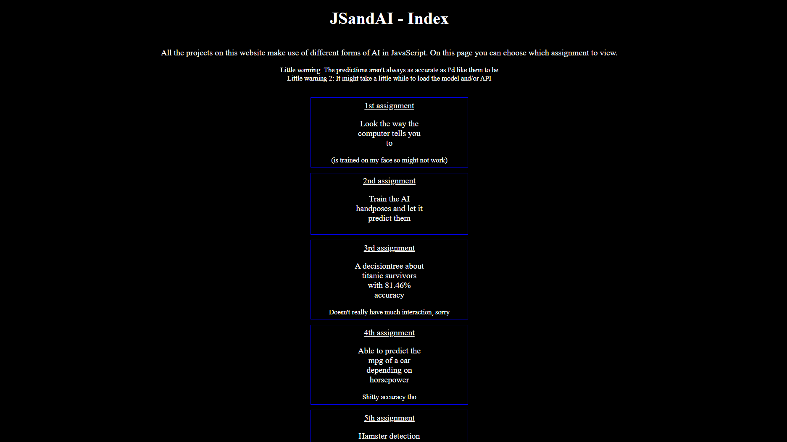
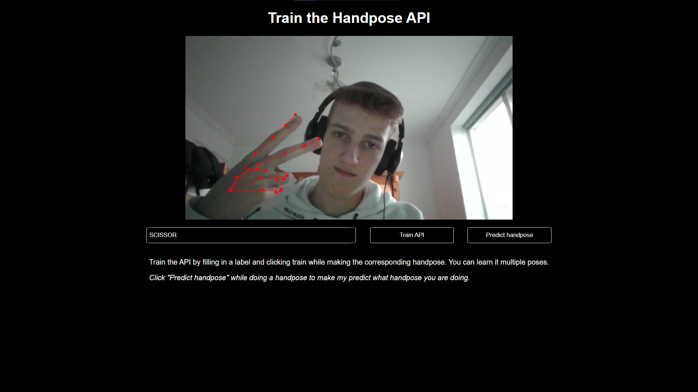
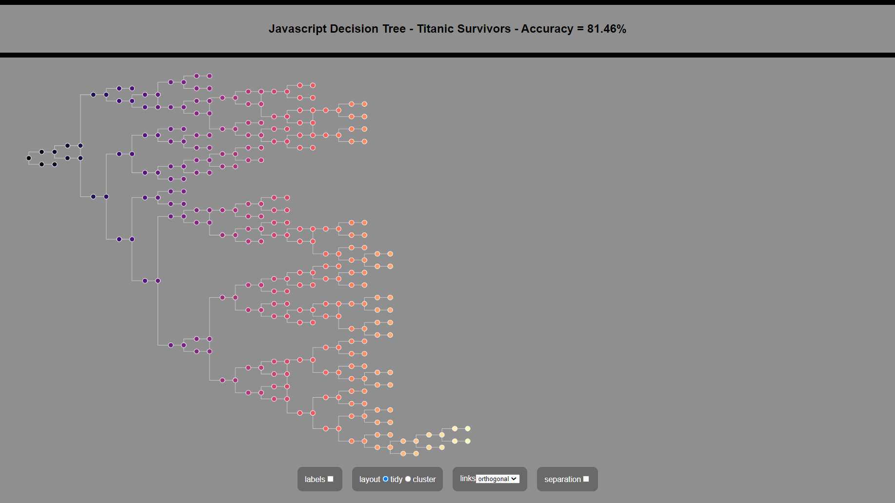
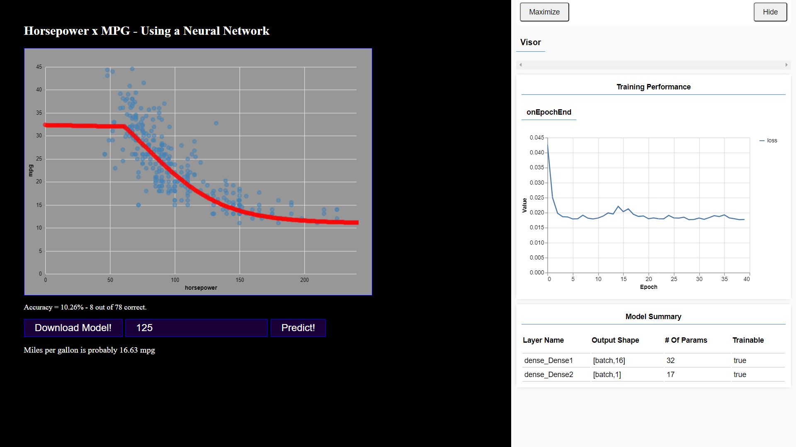
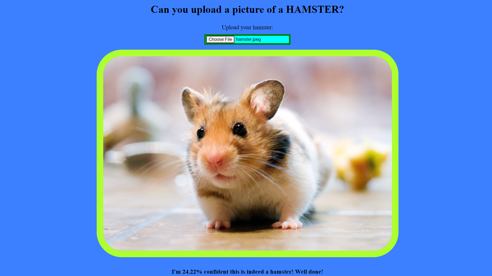
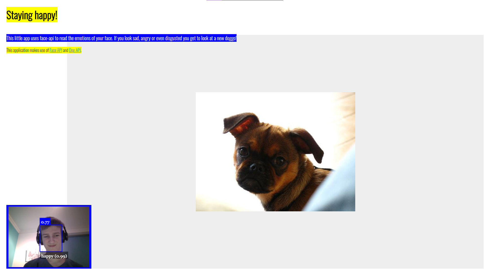

This projects consists of 6 different Artifical Intelligence applications.
This project was a bit of an eye-opener to me. It showed me that a lot more was possible with the web than I thought.
By working on it I learned about AI and Machine Learning and that it's often whacky (or maybe that's just me)
I like the hand recognition app the most, because it gives you a look behind the tech, has interaction and just looks cool.
All the applications are coded in JavaScript. They use different algoritmes, like KNN, decisiontrees or Neural Networks.
Some load pre-trained models, others train the models themself or have you train them.
I used TensorFlow.js and ML5.js so I could use Machine Learning in the browser.
GitHub -
Website
x
     